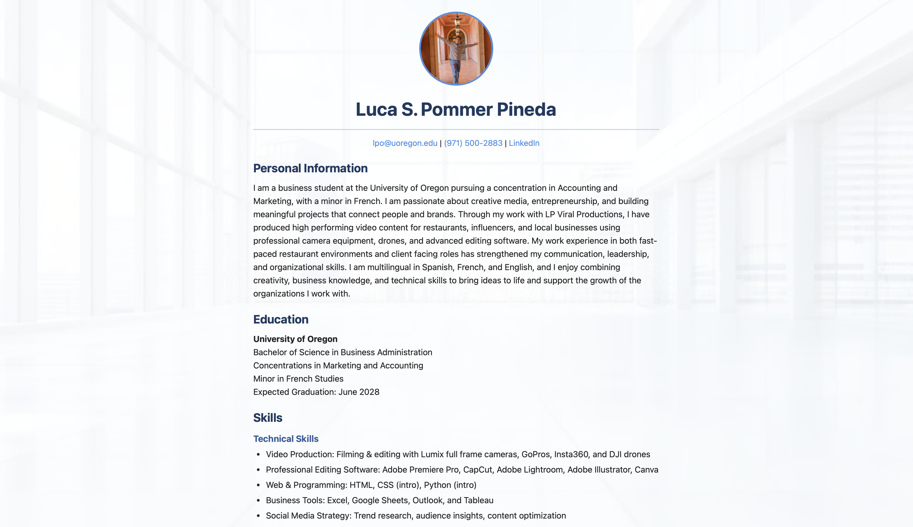

About the Project
Project 8 is about building a personal “About Me” website using semantic HTML and an external CSS file.
The goal is to create a clean, professional page that presents my personal information, education, skills, and featured projects in a well-structured layout.
I use HTML elements like <header>, <section>, <footer>, and lists to organize the content in a way that is easy to read and maintain.
The styling is handled in a separate styles.css file, which controls typography, spacing, colors, and a background image so the whole site looks cohesive.
Hyperlinks are used for my email, phone number, LinkedIn, and project pages, turning the site into a small, interactive portfolio.
Overall, this project demonstrates how basic web technologies can be combined to create a functional, shareable website that represents my work and experience.
Sample Code
The following sample is from the header section of my Project 8 page, where I display my name, profile photo, and contact information:
<header>
<img src="profile.jpg" alt="Portrait of Luca S. Pommer Pineda" class="profile-photo">
<h1>Luca S. Pommer Pineda</h1>
<hr>
<p class="contact">
<a href="mailto:lpo@uoregon.edu">lpo@uoregon.edu</a> |
<a href="tel:+19715002883">(971) 500-2883</a> |
<a href="https://www.linkedin.com/in/luca-pineda/" target="_blank">LinkedIn</a>
</p>
</header>
In this sample, the <header> element groups together the main information that appears at the top of my site, including my profile image, name, and contact details.
The image tag displays my photo and uses an alt attribute so screen readers and users with images disabled still get a description.
Underneath, the contact paragraph uses anchor tags with mailto: and tel: links so visitors can email or call me directly with a single click.
The LinkedIn link opens in a new tab, which keeps my portfolio page open while someone views my professional profile, making the website more user-friendly and interactive.
Finished Website
Below is a screenshot of the finished front page of my About Me website:
The finished website shows a centered layout with my profile picture, name, and contact information at the top, followed by clearly labeled sections for Personal Information, Education, Skills, and Featured Projects. Each section uses consistent typography and spacing, which makes the content easy to scan and gives the page a professional appearance. A subtle background image sits behind the content, adding visual interest while the text blocks remain readable on light cards. Together, these design choices turn the page into a simple but effective online portfolio that highlights who I am and the work I have done in CS110.